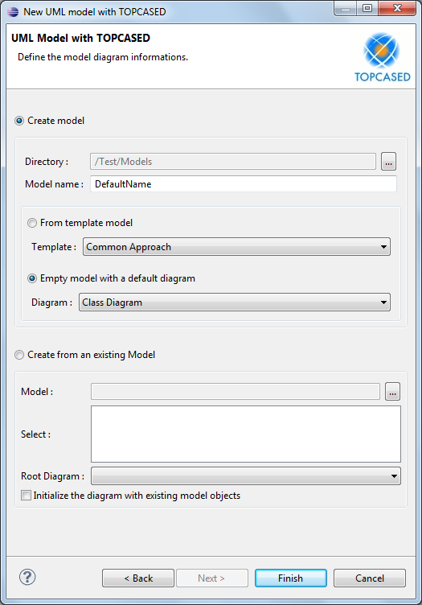

Creating UMLsec models in Topcased
Content:
Importing the UMLsec profile
- Create a new TOPCASED Project: File → New → Topcased → Topcased Project
- Afterwards create a new UML model with TOPCASED: File → New → Topcased → Topcased Diagrams → UML Model with TOPCASED
- In the appearing window choose a directory, enter a name for your new model and select the type of the initial diagram.

- Click Finish.
- If the model is open, close the *.umldi file of your project. Open the corresponding *.uml file in the Project Explorer.
- Expand the treeview in the Model Explorer and select the <Model> element.
- Select the menu item UML Editor → Package → Apply Profile.
- Select the UMLsec profile in the appearing window.

- Click Add to apply the profile and OK to confirm your decision.
- Save your project.
- Close the *.uml file of your project and open the *.umldi file. UMLsec can now be applied to model elements.

To display the stereotypes and their tag values in the modeler, click Window → Preferences in the menu bar.
In the appearing window select Topcased → Editors → UML/sysUML → All Diagram → Stereotype
and enable Display stereotype attribute as a note.